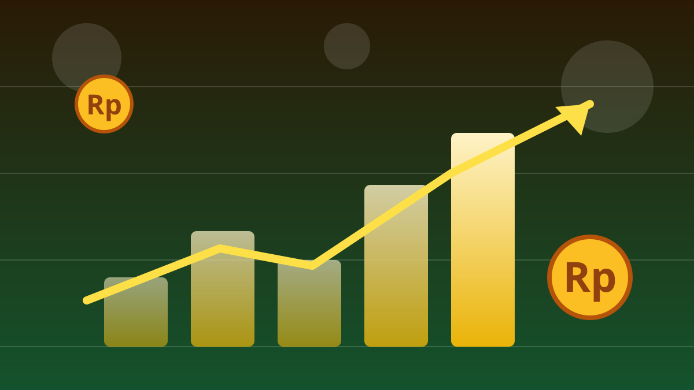

1 / 7

💰 EKONOMI
China nggak berhenti numpuk emas sejak 2 tahun lalu
Pembelian September kemarin jadi yang terbesar dalam 3 tahun. Geser buat liat angkanya →
2 / 7
🪙
21 ton emas dibeli dalam sebulan
Bank sentral China (PBoC) menambah cadangan emasnya sekitar 21 ton pada September 2026 — pembelian bulanan terbesar sejak September 2023, menurut penyedia data Wind Info.
Ini menandai bulan ke-23 berturut-turut China menambah emas. Dua tahun penuh nggak pernah absen. 😮
3 / 7
📉
Belinya pas harga lagi diskon
Strategi mereka pinter: harga emas anjlok lebih dari 6% sepanjang September, sempat menyentuh US$4.066 per ons — level terendah dua bulan terakhir.
Uniknya, meski jumlah emasnya nambah, nilai cadangannya justru turun ke US$323,52 miliar dari US$350,08 miliar sebulan sebelumnya — gara-gara harganya yang turun.
4 / 7
🌍
Nggak cuma China yang panik nabung emas
World Gold Council mencatat China dan Polandia jadi pembeli emas teratas dari kalangan negara sepanjang 2026. Survei WGC: 45% dari 74 bank sentral berencana nambah kepemilikan emas setahun ke depan.
Pemicunya: risalah The Fed yang sinyalkan satu kenaikan suku bunga lagi tahun ini, plus dolar AS yang menguat bikin aset safe-haven makin diburu.
5 / 7
🕵️
Angka aslinya mungkin lebih gede
Estimasi Goldman Sachs nyebut pembelian emas China lewat pasar luar bursa (OTC) di London jauh lebih besar dari yang dilaporkan resmi — sempat selisih puluhan ton dalam sebulan.
Cadangan devisa China tercatat US$3,4 triliun akhir September, turun US$38,1 miliar. Emas jadi cara mereka diversifikasi aset dan ngurangin ketergantungan ke dolar.
6 / 7
💬
Kata netizen
Di Instagram, banyak yang nyeletuk: "dedolarisasi dong pastinya" dan "borong emas saat harga lagi jatuh, terus timbun smpe 5th kedepan" — strategi yang ternyata beneran dipakai bank sentral China. 😂 (Suara netizen — bukan fakta.)
7 / 7
🤔
Efeknya ke lo apa?
Harga emas dunia yang lagi koreksi bisa jadi momen buat lo yang nabung emas — bank sentral sekelas China aja beli pas harga turun, bukan pas lagi mahal-mahalnya.
Tapi inget: emas itu investasi jangka panjang, bukan buat cuan seminggu. Riset dulu, sesuaikan sama tujuan keuangan lo. 💡